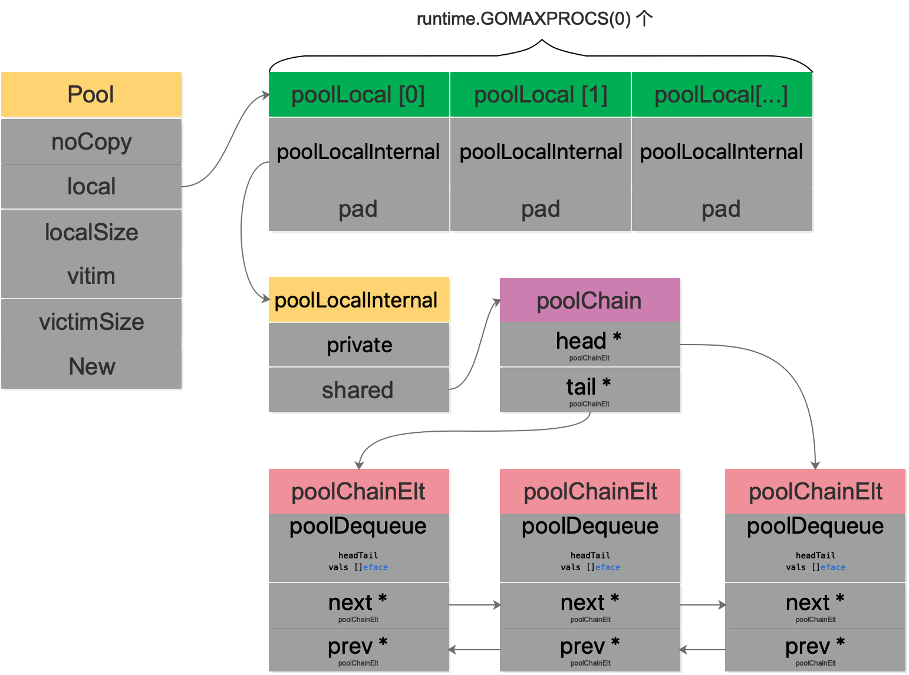

funcinitPool() { pool = &sync.Pool{ New: func()interface{} { fmt.Println("creating a new person") returnnew(Person) }, } } funcmain() { initPool() p := pool.Get().(*Person) p.name = "first" fmt.Println("1st time get:", p) pool.Put(p) fmt.Println("put p") p = pool.Get().(*Person) fmt.Println("2ed time get:", p) }
output：
creating a new person
1st time get: &{first}
put p
2ed time get: &{first}
在这个例子中，我们首先初始化 pool，并且设置 New 函数，当通过 Get 函数从缓存池中获取对象时，如果对象池是空的，就会通过 New 创建新的对象，当对象使用完成后，我们调用 Put 将它放回 pool 中。由于我们在将对象放入 pool 的时候没有将它清空，所在第二次 Get 的时候，之前设置的信息依然存在。但是在实际使用过程中，我们应该在归还对象之前将它清空。
// Printf formats according to a format specifier and writes to standard output. // It returns the number of bytes written and any write error encountered. funcPrintf(format string, a ...interface{}) (n int, err error) { return Fprintf(os.Stdout, format, a...) }
// Fprintf formats according to a format specifier and writes to w. // It returns the number of bytes written and any write error encountered. funcFprintf(w io.Writer, format string, a ...interface{}) (n int, err error) { p := newPrinter() p.doPrintf(format, a) n, err = w.Write(p.buf) p.free() return }
local unsafe.Pointer // 每个P一个 pool, 实际类型是 [P]poolLocal，可以通过动态改变P的数量进行调整 localSize uintptr// local 的大小
// 当一轮GC到来时，victim 和 victimSize 分别被赋值为 local 和 localSize // 使用victim机制来减少GC冷启动带来的性能抖动，让分配对象更顺畅。 victim unsafe.Pointer // local from previous cycle victimSize uintptr// size of victims array
// 当 Pool 中没有缓存对象时，使用 New 函数创建 New func()interface{} }
实际缓存的数据存储在 local 中，local 实际的类型是 poolLocal：
1 2 3 4 5 6 7
type poolLocal struct { poolLocalInternal
// Prevents false sharing on widespread platforms with // 128 mod (cache line size) = 0 . pad [128 - unsafe.Sizeof(poolLocalInternal{})%128]byte }
其中 pad 字段是为了防止因 伪共享 带来性能下降。CPU缓存是以缓存行（Cache line）为最小数据单位，缓存行是2的整数幂个连续字节，主流大小是64个字节。如果多个变量同属于一个缓存行，在并发环境下同时修改，因为写屏障及内存一致性协议会导致同一时间只能一个线程操作该缓存行，进而因为竞争导致性能下降，这就是“伪共享”。如果没有 pad 字段，假设我们要加载索引为0的 poolLocal，CPU 将会同时加载索引为1的 poolLocal，如果只修改索引为0的，那么索引为1的将被禁止访问。如果此时有其他线程想访问索引为1的，由于缓存失效它就得重新加载，这将会导致严重的新能下降。添加 pad 来将缓存行补齐，就可以让不同的 poolLocal 单独加载，将不存在伪共享的问题了。
// Local per-P Pool appendix. type poolLocalInternal struct { private interface{} // 只仅仅缓存一个对象，有和当前goroutine关联的P才可以访问 shared poolChain // 和当前goroutine关联的P可以 pushHead/popHead; 其他的 P 可以 popTail 偷取对象. }
// poolChain 是一个动态大小的 poolDequeue // // 它被实现为poolDequeues的双向链表，其中双向链表队列的大小是前一个的 // 两倍。生产者从链表头部的队列插入，一旦一个队列已满，将分配一个新的 // 放到链表头部。消费者从另一端读，一旦某个队列空了，它就会从列表中删除。 type poolChain struct { // head is the poolDequeue to push to. This is only accessed // by the producer, so doesn't need to be synchronized. head *poolChainElt
// tail is the poolDequeue to popTail from. This is accessed // by consumers, so reads and writes must be atomic. tail *poolChainElt }
type poolChainElt struct { poolDequeue
// next and prev link to the adjacent poolChainElts in this // poolChain. // // next is written atomically by the producer and read // atomically by the consumer. It only transitions from nil to // non-nil. // // prev is written atomically by the consumer and read // atomically by the producer. It only transitions from // non-nil to nil. next, prev *poolChainElt }
// poolDequeue 是固定大小的，无锁的，单生产者多消费者模型。 // 单个生产者可以从push和pop，消费者只能从尾部pop； // // It has the added feature that it nils out unused slots to avoid // unnecessary retention of objects. This is important for sync.Pool, // but not typically a property considered in the literature. type poolDequeue struct { // headTail packs together a 32-bit head index and a 32-bit // tail index. Both are indexes into vals modulo len(vals)-1. // // tail = index of oldest data in queue // head = index of next slot to fill // // Slots in the range [tail, head) are owned by consumers. // A consumer continues to own a slot outside this range until // it nils the slot, at which point ownership passes to the // producer. // // The head index is stored in the most-significant bits so // that we can atomically add to it and the overflow is // harmless. headTail uint64
// vals is a ring buffer of interface{} values stored in this // dequeue. The size of this must be a power of 2. // // vals[i].typ is nil if the slot is empty and non-nil // otherwise. A slot is still in use until *both* the tail // index has moved beyond it and typ has been set to nil. This // is set to nil atomically by the consumer and read // atomically by the producer. vals []eface }
画个图来说就是下面这个样子的：

Get
sync.Pool 对象内部为每个P都分配了一个 private 区和shared区，private 区只能存放一个可复用对象，因为每个 P 在任意时刻只运行一个 G，所以在private 区上写入和取出对象是不用加锁的；shared是一个动态大小的 poolDequeue，但 shared 区上写入和取出对象要加锁，因为别的 P 可能过来偷对象。
func(p *Pool) Get() interface{} { ... // race 相关 l, pid := p.pin() x := l.private l.private = nil if x == nil { // Try to pop the head of the local shard. We prefer // the head over the tail for temporal locality of // reuse. x, _ = l.shared.popHead() if x == nil { x = p.getSlow(pid) } } runtime_procUnpin() ... // race 相关 if x == nil && p.New != nil { x = p.New() } return x }
首先，调用 p.pin() 函数 将当前的 G 绑定到 P，并且禁止抢占，然后返回 poollocal 和 PID；
将 l.private 赋值给 x，然后将 l.private 置为 nil；
如果 x 是 nil，将从 l.shared 的头部弹出一个赋值给 x ；
如果 x 依然是空，那么将调用 getSlow 方法从其他的P双向队列链表的尾部偷取一个；
在 pool 相关的操作完成之后，调用 runtime_procUnpin 删掉前面打的禁止抢占标记；
最后，如果依然没有获取到对象，那么就调用 New 重新生成一个；
pin
1 2 3 4 5 6 7 8 9 10 11 12 13 14 15 16
// pin pins the current goroutine to P, disables preemption and // returns poolLocal pool for the P and the P's id. // Caller must call runtime_procUnpin() when done with the pool. func(p *Pool) pin() (*poolLocal, int) { pid := runtime_procPin() // In pinSlow we store to local and then to localSize, here we load in opposite order. // Since we've disabled preemption, GC cannot happen in between. // Thus here we must observe local at least as large localSize. // We can observe a newer/larger local, it is fine (we must observe its zero-initialized-ness). s := runtime_LoadAcquintptr(&p.localSize) // load-acquire l := p.local // load-consume ifuintptr(pid) < s { return indexLocal(l, pid), pid } return p.pinSlow() }
pin 函数将当前的 goroutine 和 P 绑定到一起，并且禁止抢占，并且获取当前的P的ID。我们来看看 runtime_procPin() 的实现：
func(p *Pool) pinSlow() (*poolLocal, int) { // Retry under the mutex. // Can not lock the mutex while pinned. runtime_procUnpin() allPoolsMu.Lock() defer allPoolsMu.Unlock() pid := runtime_procPin() // poolCleanup won't be called while we are pinned. //Atomic operations are not used because they are global locked s := p.localSize l := p.local //Because pinslow may have been called by other threads halfway, the PID needs to be checked again at this time. If the PID is within the size range of p.local, you do not need to create a poollocal slice and return directly. ifuintptr(pid) < s { return indexLocal(l, pid), pid } if p.local == nil { allPools = append(allPools, p) } // If GOMAXPROCS changes between GCs, we re-allocate the array and lose the old one. //Number of current p size := runtime.GOMAXPROCS(0) local := make([]poolLocal, size) //The old local will be recycled atomic.StorePointer(&p.local, unsafe.Pointer(&local[0])) // store-release atomic.StoreUintptr(&p.localSize, uintptr(size)) // store-release return &local[pid], pid }
popHead
回到 Get 函数中，我们再看另外一个关键函数：popHead
1 2 3 4 5 6 7 8 9 10 11 12
func(c *poolChain) popHead() (interface{}, bool) { d := c.head for d != nil { if val, ok := d.popHead(); ok { return val, ok } // There may still be unconsumed elements in the // previous dequeue, so try backing up. d = loadPoolChainElt(&d.prev) } returnnil, false }
popHead 仅仅能被生产者调用，首先获取 head 节点，如果 head 节点不为空，尝试调用 head 节点的 popHead 方法。两个 popHead 是不相同的，head 节点的 popHead 方法实际调用 poolDequeue.popHead()：
// popHead removes and returns the element at the head of the queue. // It returns false if the queue is empty. It must only be called by a // single producer. func(d *poolDequeue) popHead() (interface{}, bool) { var slot *eface for { ptrs := atomic.LoadUint64(&d.headTail) head, tail := d.unpack(ptrs) if tail == head { // Queue is empty. returnnil, false }
// Confirm tail and decrement head. We do this before // reading the value to take back ownership of this // slot. head-- ptrs2 := d.pack(head, tail) if atomic.CompareAndSwapUint64(&d.headTail, ptrs, ptrs2) { // We successfully took back slot. slot = &d.vals[head&uint32(len(d.vals)-1)] break } }
val := *(*interface{})(unsafe.Pointer(slot)) if val == dequeueNil(nil) { val = nil } // Zero the slot. Unlike popTail, this isn't racing with // pushHead, so we don't need to be careful here. *slot = eface{} return val, true }
poolDequeue 是实际上缓存对象的地方，整个函数的核心是无限循环，是go中常见的无锁编程形式。首先判断队列是否为空，如果队列为空，那么就直接返回失败。否则，将头指针向后移动一位，即头值减少1，pack重新打包头尾指针。使用原子操作CompareAndSwapUint64比较头尾是否在这里变化。如果没有变化，则相当于获取锁。然后更新headtail的值。并将vals对应索引处的元素赋给slot。因为长度只能是2的n次方，假设 head 是 6，len(d.vals) 为 8，那么 head&uint32(len(d.vals)-1) 其实是 1。
// dequeueNil is used in poolDequeue to represent interface{}(nil). // Since we use nil to represent empty slots, we need a sentinel value // to represent nil. type dequeueNil *struct{}
最后要在返回之前，将得到 slot 零值化。
getSlow
如果没有从当前P 的 poolLocal 获取到值，那么只能调用 getSlow 从其他 P 那里偷了：
func(p *Pool) getSlow(pid int) interface{} { // See the comment in pin regarding ordering of the loads. size := runtime_LoadAcquintptr(&p.localSize) // load-acquire locals := p.local // load-consume // Try to steal one element from other procs. for i := 0; i < int(size); i++ { l := indexLocal(locals, (pid+i+1)%int(size)) if x, _ := l.shared.popTail(); x != nil { return x } }
// Try the victim cache. We do this after attempting to steal // from all primary caches because we want objects in the // victim cache to age out if at all possible. size = atomic.LoadUintptr(&p.victimSize) ifuintptr(pid) >= size { returnnil } locals = p.victim l := indexLocal(locals, pid) if x := l.private; x != nil { l.private = nil return x } for i := 0; i < int(size); i++ { l := indexLocal(locals, (pid+i)%int(size)) if x, _ := l.shared.popTail(); x != nil { return x } }
// Mark the victim cache as empty for future gets don't bother // with it. atomic.StoreUintptr(&p.victimSize, 0)
returnnil }
首先从当前 P 的下一个 P 开始偷，其实就是从其他P的 poolLocal 最后那个 poolDequeue 的尾部开始偷。要是没偷到，那就从 victim 中拿，顺序也是先从当前P的 victim 拿，然后从其他 P 的 victim 偷，如果最终还是没拿到，就把当前 victimSize 设置为 0 。
popTail
继续看下 poolChain 的 popTail 函数，焦点应该for循环的顶部，我们在获取到poolChain的最后一个环形队列之后，又获取到了它的next队列，实际上是的前一个队列，如果d为空，我们要向将 d 摘除，那么 next 不能是空，摘除 next 之后，我们继续从前面的环形队列查找。
func(c *poolChain) popTail() (interface{}, bool) { d := loadPoolChainElt(&c.tail) if d == nil { returnnil, false }
for { // It's important that we load the next pointer // *before* popping the tail. In general, d may be // transiently empty, but if next is non-nil before // the pop and the pop fails, then d is permanently // empty, which is the only condition under which it's // safe to drop d from the chain. d2 := loadPoolChainElt(&d.next)
if val, ok := d.popTail(); ok { return val, ok }
if d2 == nil { // This is the only dequeue. It's empty right // now, but could be pushed to in the future. returnnil, false }
// The tail of the chain has been drained, so move on // to the next dequeue. Try to drop it from the chain // so the next pop doesn't have to look at the empty // dequeue again. if atomic.CompareAndSwapPointer((*unsafe.Pointer)(unsafe.Pointer(&c.tail)), unsafe.Pointer(d), unsafe.Pointer(d2)) { // We won the race. Clear the prev pointer so // the garbage collector can collect the empty // dequeue and so popHead doesn't back up // further than necessary. storePoolChainElt(&d2.prev, nil) } d = d2 } }
// popTail removes and returns the element at the tail of the queue. // It returns false if the queue is empty. It may be called by any // number of consumers. func(d *poolDequeue) popTail() (interface{}, bool) { var slot *eface for { ptrs := atomic.LoadUint64(&d.headTail) head, tail := d.unpack(ptrs) if tail == head { // Queue is empty. returnnil, false }
// Confirm head and tail (for our speculative check // above) and increment tail. If this succeeds, then // we own the slot at tail. ptrs2 := d.pack(head, tail+1) if atomic.CompareAndSwapUint64(&d.headTail, ptrs, ptrs2) { // Success. slot = &d.vals[tail&uint32(len(d.vals)-1)] break } }
// We now own slot. val := *(*interface{})(unsafe.Pointer(slot)) if val == dequeueNil(nil) { val = nil }
// Tell pushHead that we're done with this slot. Zeroing the // slot is also important so we don't leave behind references // that could keep this object live longer than necessary. // // We write to val first and then publish that we're done with // this slot by atomically writing to typ. slot.val = nil atomic.StorePointer(&slot.typ, nil) // At this point pushHead owns the slot.
return val, true }
Put
相较于 Get 的流程，Put 则简单多了，在删除race相关的代码之后，主要有两个流程：
绑定P 和 G，将 x 赋值给 l.private 字段
如果失败，调用 pushHead 把它放到双向循环队列的头部
1 2 3 4 5 6 7 8 9 10 11 12 13 14 15
// Put adds x to the pool. func(p *Pool) Put(x interface{}) { if x == nil { return } l, _ := p.pin() if l.private == nil { l.private = x x = nil } if x != nil { l.shared.pushHead(x) } runtime_procUnpin() }
func(c *poolChain) pushHead(val interface{}) { d := c.head if d == nil { // Initialize the chain. const initSize = 8// Must be a power of 2 d = new(poolChainElt) d.vals = make([]eface, initSize) c.head = d storePoolChainElt(&c.tail, d) }
if d.pushHead(val) { return }
// The current dequeue is full. Allocate a new one of twice // the size. newSize := len(d.vals) * 2 if newSize >= dequeueLimit { // Can't make it any bigger. newSize = dequeueLimit }
先判断 head 节点是不是空，如果是空，那就新生成1个8个元素的双向循环队列，然后调用 poolDequeue 的 pushHead 方法插入。如果不为空，那么直接插入，但是如果插入的过程中发现头部的双向循环队列满了，那也新建一个，只是新建的循环队列的长度是之前的2倍，但是最大值是 dequeueLimit :
1 2 3 4 5 6 7 8
const dequeueBits = 32
// dequeueLimit is the maximum size of a poolDequeue. // // This must be at most (1<<dequeueBits)/2 because detecting fullness // depends on wrapping around the ring buffer without wrapping around // the index. We divide by 4 so this fits in an int on 32-bit. const dequeueLimit = (1 << dequeueBits) / 4// 2 ^30 = 1073741824
funcpoolCleanup() { // This function is called with the world stopped, at the beginning of a garbage collection. // It must not allocate and probably should not call any runtime functions.
// Because the world is stopped, no pool user can be in a // pinned section (in effect, this has all Ps pinned).
// Drop victim caches from all pools. for _, p := range oldPools { p.victim = nil p.victimSize = 0 }
// Move primary cache to victim cache. for _, p := range allPools { p.victim = p.local p.victimSize = p.localSize p.local = nil p.localSize = 0 }
// The pools with non-empty primary caches now have non-empty // victim caches and no pools have primary caches. oldPools, allPools = allPools, nil }
poolCleanup 的设计十分简单，仅仅是交换 local 和 victim，交换之前将旧的 victim 置为空，